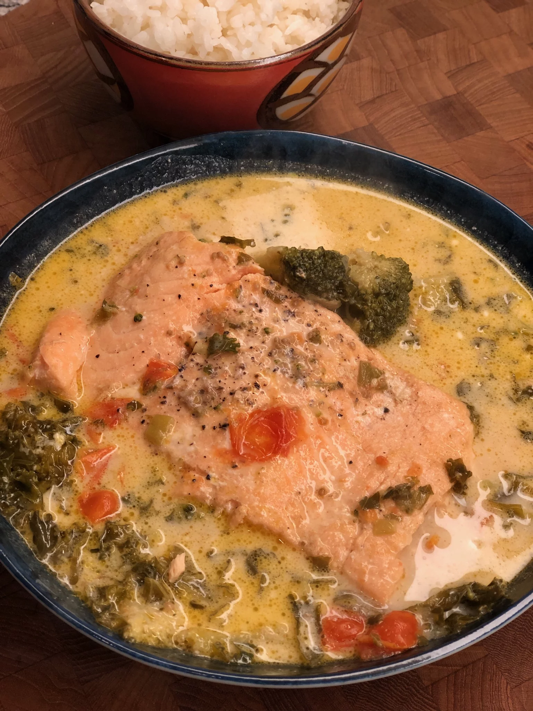

Ginataang Salmon Recipe

Description
This is a traditional Filipino fish stew, made with coconut milk and veggies. Serve this with white rice and you'll feel like you're experiencing your backpacking trip through the Filipino islands once again. Serve with a bowl of white rice on the side.
Ingredients
- 1 tablespoon vegetable oil
- 3 drops sesame oil, or to taste
- ¼ cup diced onion
- 2 diced green onions, white and green parts
- 1 teaspoon garlic powder
- ½ cup diced fresh tomato
- 2 tablespoons fish sauce
- 1 cup vegetable broth
- 1 (11 ounce) salmon side, bones removed with pliers
- 1 cup coconut milk
- 1 ½ cups broccoli florets
- 1 cup chopped kale
- ½ teaspoon salt
- ¼ teaspoon ground black pepper
Directions
- Turn on a multi-functional pressure cooker (such as Instant Pot®) and select Saute function. Warm vegetable oil in pot, and add sesame oil. Add onion and green onions and saute for 1 minute. Add garlic powder; cook for 1 minute. Mix in diced tomato and pour in fish sauce; cook until heated through, about 2 minutes.
- Add vegetable broth to the pot and place salmon on top of the liquid and vegetables. Select Cancel to turn off Saute mode, and close and lock the lid. Select high pressure according to manufacturer's instructions; set timer for 5 minutes. Allow 10 to 15 minutes for pressure to build.
- Release pressure using the natural-release method according to manufacturer's instructions, 10 to 20 minutes. Remove lid. Pour in coconut milk, then add broccoli and kale. Mix vegetables gently around the side of salmon, but be careful not to break up the cooked salmon. Sprinkle salt and pepper over top. Replace lid and set vent to "Sealing."
- Select the Steam function and steam for 2 minutes. Release pressure by turning the seal to "Venting." Remove lid.